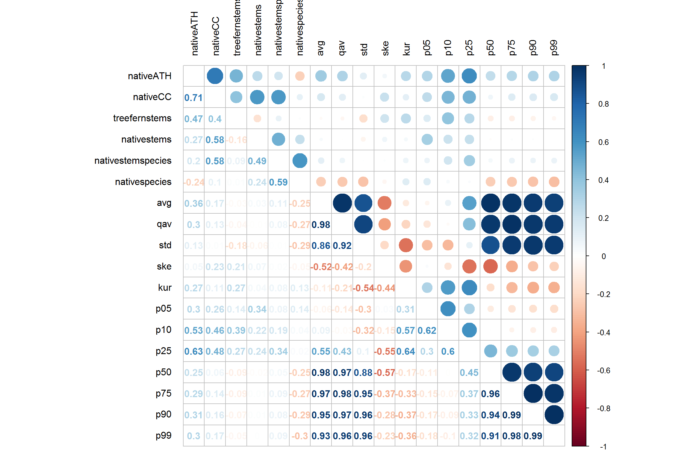

initial-analysis
jonathandash
2018-08-27
Last updated: 2018-08-27
workflowr checks: (Click a bullet for more information)-
✔ R Markdown file: up-to-date
Great! Since the R Markdown file has been committed to the Git repository, you know the exact version of the code that produced these results.
-
✔ Environment: empty
Great job! The global environment was empty. Objects defined in the global environment can affect the analysis in your R Markdown file in unknown ways. For reproduciblity it’s best to always run the code in an empty environment.
-
✔ Seed:
set.seed(20180827)The command
set.seed(20180827)was run prior to running the code in the R Markdown file. Setting a seed ensures that any results that rely on randomness, e.g. subsampling or permutations, are reproducible. -
✔ Session information: recorded
Great job! Recording the operating system, R version, and package versions is critical for reproducibility.
-
Great! You are using Git for version control. Tracking code development and connecting the code version to the results is critical for reproducibility. The version displayed above was the version of the Git repository at the time these results were generated.✔ Repository version: b802c85
Note that you need to be careful to ensure that all relevant files for the analysis have been committed to Git prior to generating the results (you can usewflow_publishorwflow_git_commit). workflowr only checks the R Markdown file, but you know if there are other scripts or data files that it depends on. Below is the status of the Git repository when the results were generated:
Note that any generated files, e.g. HTML, png, CSS, etc., are not included in this status report because it is ok for generated content to have uncommitted changes.Ignored files: Ignored: docs/figure/ Untracked files: Untracked: data/RecceSurvey Data summary Hunuas Watercare.xlsx Untracked: data/allmetrics.csv Untracked: data/field-data.csv Untracked: out/
Expand here to see past versions:
Introduction
This analysis is designed to investigate the ALS metrics for the field plots and identify important predictors. Once these are produced we generate useful metrics and produce initial maps.
#### Setup project ####
library(here)here() starts at E:/understoreylibrary(tidyverse)-- Attaching packages ------------------------------------------------------------------------------------------- tidyverse 1.2.1 --v ggplot2 3.0.0 v purrr 0.2.5
v tibble 1.4.2 v dplyr 0.7.6
v tidyr 0.8.1 v stringr 1.3.1
v readr 1.1.1 v forcats 0.3.0-- Conflicts ---------------------------------------------------------------------------------------------- tidyverse_conflicts() --
x dplyr::filter() masks stats::filter()
x dplyr::lag() masks stats::lag()library(corrplot)corrplot 0.84 loadedlibrary(randomForest)randomForest 4.6-14Type rfNews() to see new features/changes/bug fixes.
Attaching package: 'randomForest'The following object is masked from 'package:dplyr':
combineThe following object is masked from 'package:ggplot2':
marginlibrary(caret)Loading required package: lattice
Attaching package: 'caret'The following object is masked from 'package:purrr':
lift#### Read data and merge ####
# Read field data
f.df<-read.csv(here('data', 'field-data.csv'))
# Read Grant's lidar metrics
als.df<-read.csv(here('data', 'allmetrics.csv'))
glimpse(als.df)Observations: 71
Variables: 80
$ PlotID <int> 1, 10, 11, 12, 13, 14, 15, 16, 17, 18, 19, 2, ...
$ file_name <fct> 1.las, 10.las, 11.las, 12.las, 13.las, 14.las,...
$ avg <dbl> 15.564, 12.678, 11.490, 8.546, 12.533, 12.615,...
$ qav <dbl> 310.218, 216.872, 163.483, 113.665, 220.776, 2...
$ std <dbl> 8.246, 7.493, 5.609, 6.375, 7.982, 6.974, 5.05...
$ ske <dbl> -0.467, -0.618, -0.138, 0.120, -0.031, -0.289,...
$ kur <dbl> 2.206, 1.901, 2.324, 1.527, 1.577, 1.853, 2.17...
$ p05 <dbl> 0.000, 0.000, 0.186, 0.148, 0.282, 0.072, 0.08...
$ p10 <dbl> 1.490, 0.189, 4.793, 0.822, 2.499, 2.401, 2.67...
$ p25 <dbl> 9.754, 5.870, 7.496, 2.384, 4.433, 6.642, 6.58...
$ p50 <dbl> 17.256, 15.733, 11.991, 9.627, 13.961, 14.245,...
$ p75 <dbl> 21.948, 18.404, 15.756, 14.154, 19.597, 18.540...
$ p90 <dbl> 25.491, 20.479, 18.852, 17.046, 22.955, 20.996...
$ p99 <dbl> 29.143, 23.236, 22.384, 20.308, 25.820, 23.842...
$ b05 <dbl> 10.1, 17.4, 5.8, 13.0, 7.3, 8.9, 8.6, 9.8, 10....
$ b10 <dbl> 11.6, 19.7, 6.5, 23.3, 10.7, 10.1, 9.2, 12.7, ...
$ b25 <dbl> 21.8, 27.0, 15.6, 44.3, 32.2, 24.1, 16.5, 24.1...
$ b50 <dbl> 42.0, 37.3, 50.3, 57.6, 49.1, 45.8, 52.6, 34.2...
$ b75 <dbl> 81.0, 83.5, 87.1, 86.4, 78.2, 82.3, 84.5, 75.8...
$ b90 <dbl> 96.9, 99.0, 97.9, 98.5, 94.9, 98.6, 98.7, 97.3...
$ c00 <int> 63, 350, 51, 1025, 201, 91, 88, 98, 380, 226, ...
$ c01 <int> 375, 245, 263, 1461, 1107, 417, 528, 500, 1306...
$ c02 <int> 1399, 546, 2193, 1148, 1085, 2116, 3484, 659, ...
$ c03 <int> 5116, 3129, 2807, 2559, 2869, 4198, 2897, 3981...
$ d00 <dbl> 0.7, 7.2, 0.9, 15.4, 3.5, 1.2, 1.2, 1.7, 4.0, ...
$ d01 <dbl> 4.2, 5.1, 4.7, 21.9, 19.3, 5.6, 6.9, 8.4, 13.9...
$ d02 <dbl> 15.8, 11.3, 39.0, 17.2, 18.9, 28.4, 45.8, 11.1...
$ d03 <dbl> 57.8, 64.8, 49.9, 38.4, 50.0, 56.3, 38.1, 67.1...
$ int_max <int> 221, 215, 235, 233, 251, 207, 198, 182, 165, 2...
$ int_avg <int> 22, 33, 32, 34, 36, 19, 38, 20, 23, 37, 30, 35...
$ int_qav <int> 1234, 2283, 2950, 2677, 3671, 1038, 3230, 998,...
$ int_std <dbl> 26.98, 34.38, 43.29, 38.21, 48.45, 25.67, 41.5...
$ int_ske <dbl> 2.21, 1.25, 2.12, 1.57, 1.98, 2.43, 1.29, 1.66...
$ int_kur <dbl> 9.19, 4.19, 7.18, 5.23, 6.51, 10.19, 3.84, 5.6...
$ int_p05 <int> 1, 1, 1, 1, 1, 1, 1, 1, 1, 1, 1, 1, 1, 1, 1, 1...
$ int_p10 <int> 1, 2, 2, 2, 1, 1, 2, 1, 1, 2, 1, 1, 2, 2, 1, 1...
$ int_p25 <int> 4, 6, 5, 6, 5, 3, 5, 3, 4, 6, 4, 5, 6, 6, 5, 4...
$ int_p50 <int> 12, 19, 15, 20, 15, 9, 22, 11, 12, 19, 15, 16,...
$ int_p75 <int> 32, 55, 43, 54, 49, 26, 62, 32, 35, 54, 47, 52...
$ int_p90 <int> 59, 86, 90, 90, 103, 53, 102, 56, 67, 110, 79,...
$ int_p99 <int> 129, 129, 195, 160, 207, 125, 162, 94, 114, 16...
$ dns <dbl> 89.6, 81.3, 93.6, 77.6, 91.3, 90.3, 90.8, 89.2...
$ cov_03 <dbl> 100.0, 98.0, 100.0, 99.8, 100.0, 100.0, 100.0,...
$ cov_2 <dbl> 100.0, 96.3, 100.0, 94.7, 100.0, 100.0, 100.0,...
$ cov_5 <dbl> 100.0, 95.3, 99.9, 78.2, 97.9, 99.8, 99.9, 99....
$ cov_12 <dbl> 97.9, 92.8, 82.6, 65.0, 79.0, 92.2, 60.8, 98.4...
$ cov_25 <dbl> 29.8, 0.2, 0.0, 0.0, 9.2, 0.6, 0.0, 7.9, 0.6, ...
$ VCI_h0p3 <dbl> 0.9275530, 0.8934686, 0.9285598, 0.8879837, 0....
$ VCI_h12 <dbl> 0.5923431, 0.5968369, 0.6289026, 0.5959740, 0....
$ VCI_h2 <dbl> 0.9324653, 0.8567565, 0.8986397, 0.8209309, 0....
$ VCI_h5 <dbl> 0.8699780, 0.8060600, 0.8229164, 0.7066366, 0....
$ SCI_0.3 <dbl> 0.17929876, 0.17053364, 0.09058719, 0.09972299...
$ SCI_12 <dbl> 0.4014277, 0.3732599, 0.5559162, 0.5991903, 0....
$ SCI_2 <dbl> 0.1900063, 0.2645012, 0.1015049, 0.3106755, 0....
$ SCI_25 <dbl> 0.8335083, 0.9988399, 1.0000000, 1.0000000, 0....
$ SCI_5 <dbl> 0.2477430, 0.3022042, 0.1531425, 0.5173663, 0....
$ cc_above_0.3m <dbl> 1.0000000, 1.0000000, 1.0000000, 1.0000000, 1....
$ cc_above_12m <dbl> 0.9834711, 1.0000000, 0.9752066, 0.8429752, 0....
$ cc_above_25m <dbl> 0.545454545, 0.008264463, 0.000000000, 0.00000...
$ cc_above_2m <dbl> 1.0000000, 1.0000000, 1.0000000, 0.9917355, 1....
$ cc_above_5m <dbl> 1.0000000, 1.0000000, 1.0000000, 0.9090909, 1....
$ LPI <dbl> 0.20740741, 0.15869312, 0.08711007, 0.08496177...
$ b90f_b80f <dbl> 20.864198, 16.716958, 12.477928, 14.869565, 18...
$ medint_fc <dbl> 18.0, 25.0, 14.0, 20.5, 28.0, 13.0, 27.0, 12.0...
$ p90_b90af <dbl> 151.32685, 12.31858, 78.52160, 32.37198, 209.4...
$ ln_mfp <dbl> 1.3131132, 1.2732252, 1.1330420, 1.1107603, 1....
$ mfp <dbl> 5.265299, 5.325736, 3.914086, 4.187118, 5.5554...
$ PccFrom_12_m <dbl> 0.7364618, 0.7296517, 0.4750451, 0.3621391, 0....
$ PccFrom_25_m <dbl> 0.108773254, 0.000569963, 0.000000000, 0.00000...
$ PccFrom_2_m <dbl> 0.9921802, 0.9022453, 0.9906828, 0.8130614, 0....
$ PccFrom_5_m <dbl> 0.9392384, 0.8513985, 0.9286735, 0.5302826, 0....
$ H_SVM_D_med_ar <dbl> 26.6200, 25.5965, 15.7640, 15.0300, 25.5990, 2...
$ H_SVM_D_med_fr <dbl> 26.8650, 25.5965, 16.5200, 15.6840, 25.6540, 2...
$ H_SVM_D_med_fsr <dbl> 26.6920, 25.5965, 16.0370, 15.2680, 25.5990, 2...
$ H_SVM_med_ar <dbl> 18.7350, 17.6340, 15.7640, 15.0300, 18.9560, 1...
$ H_SVM_med_fr <dbl> 20.0730, 18.6610, 16.5200, 15.6840, 20.1860, 1...
$ H_SVM_med_fsr <dbl> 19.2885, 17.9580, 16.0370, 15.2680, 19.5900, 1...
$ D0_ENL <int> 31, 26, 25, 22, 27, 27, 21, 28, 26, 21, 25, 25...
$ D1_ENL <dbl> 0.011059766, 0.000500655, 0.009321956, 0.00233...
$ D2_ENL <dbl> 0.02494430, 0.02396033, 0.03051672, 0.03017616...glimpse(f.df)Observations: 72
Variables: 30
$ plot <fct> RR1 , RR2, RR3, RR4, RR5, RR6, RR7, RR8, R...
$ altitude <int> 451, 430, 442, 408, 392, 399, 398, 426, 45...
$ aspect <int> 0, 0, 110, 270, 0, 200, 320, 294, 80, 0, 1...
$ slope <int> 0, 0, 8, 6, 0, 7, 10, 14, 11, 0, 13, 9, 12...
$ pineage <int> 25, 17, 25, 17, 25, 25, 25, 25, 18, 17, 18...
$ pinestems <int> 6, 2, 3, 3, 3, 2, 2, 5, 2, 5, 4, 4, 4, 3, ...
$ pineATH <int> 36, 28, 25, 25, 30, 38, 34, 36, 26, 25, 23...
$ pineCC <int> 60, 50, 30, 60, 65, 65, 70, 85, 60, 60, 40...
$ nativeATH <dbl> 6.0, 4.0, 5.0, 2.0, 4.0, 4.0, 4.0, 6.0, 5....
$ nativeCC <int> 90, 75, 75, 5, 85, 75, 90, 90, 95, 35, 90,...
$ treefernstems <int> 3, 4, 6, 0, 1, 6, 12, 1, 5, 2, 11, 1, 16, ...
$ nativestems <int> 30, 20, 23, 4, 55, 15, 20, 24, 12, 12, 11,...
$ totalnativestems <int> 33, 24, 29, 4, 56, 21, 32, 25, 17, 14, 22,...
$ nativestemspecies <int> 6, 5, 6, 2, 9, 7, 7, 6, 5, 7, 7, 9, 5, 7, ...
$ nativespecies <int> 6, 7, 9, 5, 13, 8, 7, 8, 8, 12, 9, 13, 9, ...
$ nativestemsperha <int> 3300, 2400, 2900, 400, 5600, 2100, 3200, 2...
$ total.coverT1 <int> 55, 50, 30, 20, 60, 40, 55, 85, 40, 15, 25...
$ total.coverT2 <int> 50, 50, 30, 60, 60, 65, 70, 5, 60, 60, 40,...
$ total.coverT3 <int> 60, 25, 45, 5, 10, 10, 20, 75, 75, 20, 60,...
$ total.coverT4 <int> 30, 60, 45, 5, 65, 60, 77, 85, 85, 27, 70,...
$ total.coverT5 <int> 10, 30, 10, 85, 30, 10, 25, 35, 25, 55, 19...
$ distancetobignative <int> 530, 100, 290, 470, 250, 115, 195, 150, 23...
$ regime <fct> clearwood, clearwood, clearwood, clearwood...
$ TSPHA <int> 335, 329, 335, 332, 335, 335, 335, 335, 32...
$ nativeT2 <int> 0, 0, 0, 0, 0, 0, 0, 0, 0, 0, 0, 0, 0, 0, ...
$ nativeT3 <int> 35, 20, 45, 1, 10, 10, 20, 75, 78, 15, 55,...
$ nativeT4 <int> 42, 63, 48, 4, 68, 60, 75, 81, 90, 25, 70,...
$ nativeT5 <int> 11, 39, 12, 15, 49, 10, 24, 35, 23, 44, 20...
$ weedT4 <int> 0, 0, 0, 1, 0, 0, 2, 5, 0, 2, 0, 1, 0, 0, ...
$ weedT5 <int> 0, 1, 0, 80, 1, 3, 1, 1, 2, 21, 0, 6, 0, 0...# looks like plot names are not consistent
head(als.df) PlotID file_name avg qav std ske kur p05 p10 p25
1 1 1.las 15.564 310.218 8.246 -0.467 2.206 0.000 1.490 9.754
2 10 10.las 12.678 216.872 7.493 -0.618 1.901 0.000 0.189 5.870
3 11 11.las 11.490 163.483 5.609 -0.138 2.324 0.186 4.793 7.496
4 12 12.las 8.546 113.665 6.375 0.120 1.527 0.148 0.822 2.384
5 13 13.las 12.533 220.776 7.982 -0.031 1.577 0.282 2.499 4.433
6 14 14.las 12.615 207.770 6.974 -0.289 1.853 0.072 2.401 6.642
p50 p75 p90 p99 b05 b10 b25 b50 b75 b90 c00 c01 c02
1 17.256 21.948 25.491 29.143 10.1 11.6 21.8 42.0 81.0 96.9 63 375 1399
2 15.733 18.404 20.479 23.236 17.4 19.7 27.0 37.3 83.5 99.0 350 245 546
3 11.991 15.756 18.852 22.384 5.8 6.5 15.6 50.3 87.1 97.9 51 263 2193
4 9.627 14.154 17.046 20.308 13.0 23.3 44.3 57.6 86.4 98.5 1025 1461 1148
5 13.961 19.597 22.955 25.820 7.3 10.7 32.2 49.1 78.2 94.9 201 1107 1085
6 14.245 18.540 20.996 23.842 8.9 10.1 24.1 45.8 82.3 98.6 91 417 2116
c03 d00 d01 d02 d03 int_max int_avg int_qav int_std int_ske int_kur
1 5116 0.7 4.2 15.8 57.8 221 22 1234 26.98 2.21 9.19
2 3129 7.2 5.1 11.3 64.8 215 33 2283 34.38 1.25 4.19
3 2807 0.9 4.7 39.0 49.9 235 32 2950 43.29 2.12 7.18
4 2559 15.4 21.9 17.2 38.4 233 34 2677 38.21 1.57 5.23
5 2869 3.5 19.3 18.9 50.0 251 36 3671 48.45 1.98 6.51
6 4198 1.2 5.6 28.4 56.3 207 19 1038 25.67 2.43 10.19
int_p05 int_p10 int_p25 int_p50 int_p75 int_p90 int_p99 dns cov_03
1 1 1 4 12 32 59 129 89.6 100.0
2 1 2 6 19 55 86 129 81.3 98.0
3 1 2 5 15 43 90 195 93.6 100.0
4 1 2 6 20 54 90 160 77.6 99.8
5 1 1 5 15 49 103 207 91.3 100.0
6 1 1 3 9 26 53 125 90.3 100.0
cov_2 cov_5 cov_12 cov_25 VCI_h0p3 VCI_h12 VCI_h2 VCI_h5
1 100.0 100.0 97.9 29.8 0.9275530 0.5923431 0.9324653 0.8699780
2 96.3 95.3 92.8 0.2 0.8934686 0.5968369 0.8567565 0.8060600
3 100.0 99.9 82.6 0.0 0.9285598 0.6289026 0.8986397 0.8229164
4 94.7 78.2 65.0 0.0 0.8879837 0.5959740 0.8209309 0.7066366
5 100.0 97.9 79.0 9.2 0.9560070 0.6307794 0.9378231 0.8619625
6 100.0 99.8 92.2 0.6 0.9316994 0.6256745 0.9190053 0.8707560
SCI_0.3 SCI_12 SCI_2 SCI_25 SCI_5 cc_above_0.3m
1 0.17929876 0.4014277 0.1900063 0.8335083 0.2477430 1
2 0.17053364 0.3732599 0.2645012 0.9988399 0.3022042 1
3 0.09058719 0.5559162 0.1015049 1.0000000 0.1531425 1
4 0.09972299 0.5991903 0.3106755 1.0000000 0.5173663 1
5 0.08005464 0.5765027 0.1284153 0.9478142 0.3781421 1
6 0.14898153 0.5000000 0.1684036 0.9973946 0.2363809 1
cc_above_12m cc_above_25m cc_above_2m cc_above_5m LPI b90f_b80f
1 0.9834711 0.545454545 1.0000000 1.0000000 0.20740741 20.86420
2 1.0000000 0.008264463 1.0000000 1.0000000 0.15869312 16.71696
3 0.9752066 0.000000000 1.0000000 1.0000000 0.08711007 12.47793
4 0.8429752 0.000000000 0.9917355 0.9090909 0.08496177 14.86957
5 0.8429752 0.198347107 1.0000000 1.0000000 0.08723281 18.42865
6 1.0000000 0.041666667 1.0000000 1.0000000 0.15113350 25.08816
medint_fc p90_b90af ln_mfp mfp PccFrom_12_m PccFrom_25_m
1 18.0 151.32685 1.313113 5.265299 0.7364618 0.108773254
2 25.0 12.31858 1.273225 5.325736 0.7296517 0.000569963
3 14.0 78.52160 1.133042 3.914086 0.4750451 0.000000000
4 20.5 32.37198 1.110760 4.187118 0.3621391 0.000000000
5 28.0 209.49718 1.375629 5.555497 0.4745106 0.023178313
6 13.0 133.27605 1.240612 4.666538 0.6008215 0.001169775
PccFrom_2_m PccFrom_5_m H_SVM_D_med_ar H_SVM_D_med_fr H_SVM_D_med_fsr
1 0.9921802 0.9392384 26.6200 26.8650 26.6920
2 0.9022453 0.8513985 25.5965 25.5965 25.5965
3 0.9906828 0.9286735 15.7640 16.5200 16.0370
4 0.8130614 0.5302826 15.0300 15.6840 15.2680
5 0.9674442 0.7617618 25.5990 25.6540 25.5990
6 0.9876021 0.9234126 25.1680 25.1680 25.1680
H_SVM_med_ar H_SVM_med_fr H_SVM_med_fsr D0_ENL D1_ENL D2_ENL
1 18.735 20.073 19.2885 31 0.011059766 0.02494430
2 17.634 18.661 17.9580 26 0.000500655 0.02396033
3 15.764 16.520 16.0370 25 0.009321956 0.03051672
4 15.030 15.684 15.2680 22 0.002333171 0.03017616
5 18.956 20.186 19.5900 27 0.053016252 0.03027978
6 18.065 19.577 18.7610 27 0.005795880 0.02804158head(f.df) plot altitude aspect slope pineage pinestems pineATH pineCC nativeATH
1 RR1 451 0 0 25 6 36 60 6
2 RR2 430 0 0 17 2 28 50 4
3 RR3 442 110 8 25 3 25 30 5
4 RR4 408 270 6 17 3 25 60 2
5 RR5 392 0 0 25 3 30 65 4
6 RR6 399 200 7 25 2 38 65 4
nativeCC treefernstems nativestems totalnativestems nativestemspecies
1 90 3 30 33 6
2 75 4 20 24 5
3 75 6 23 29 6
4 5 0 4 4 2
5 85 1 55 56 9
6 75 6 15 21 7
nativespecies nativestemsperha total.coverT1 total.coverT2 total.coverT3
1 6 3300 55 50 60
2 7 2400 50 50 25
3 9 2900 30 30 45
4 5 400 20 60 5
5 13 5600 60 60 10
6 8 2100 40 65 10
total.coverT4 total.coverT5 distancetobignative regime TSPHA nativeT2
1 30 10 530 clearwood 335 0
2 60 30 100 clearwood 329 0
3 45 10 290 clearwood 335 0
4 5 85 470 clearwood 332 0
5 65 30 250 clearwood 335 0
6 60 10 115 clearwood 335 0
nativeT3 nativeT4 nativeT5 weedT4 weedT5
1 35 42 11 0 0
2 20 63 39 0 1
3 45 48 12 0 0
4 1 4 15 1 80
5 10 68 49 0 1
6 10 60 10 0 3# Check with GP that these als lines are logical... If so proceed bying making a linking identifier.
# GP confirmed on Slack message
# merge datasets
als.df$identifier<-paste('RR', als.df$PlotID, sep='') # Checked with GP and seems reasonable
ref<-merge(f.df, als.df, by.x = 'plot', by.y = 'identifier')
str(ref)'data.frame': 70 obs. of 110 variables:
$ plot : Factor w/ 72 levels "RR1 ","RR10",..: 2 3 4 5 6 7 8 9 10 11 ...
$ altitude : int 415 454 428 423 392 307 311 331 337 414 ...
$ aspect : int 0 160 105 110 120 280 210 100 170 320 ...
$ slope : int 0 13 9 12 28 15 15 25 10 15 ...
$ pineage : int 17 18 18 18 16 16 16 16 16 17 ...
$ pinestems : int 5 4 4 4 3 3 8 6 3 5 ...
$ pineATH : int 25 23 18 30 25 25 22 25 18 30 ...
$ pineCC : int 60 40 45 60 65 55 80 65 20 80 ...
$ nativeATH : num 3 6 3 5 5 5 4 5 3 7 ...
$ nativeCC : int 35 90 90 85 80 95 70 85 95 70 ...
$ treefernstems : int 2 11 1 16 6 6 3 0 4 3 ...
$ nativestems : int 12 11 20 9 27 32 28 27 34 15 ...
$ totalnativestems : int 14 22 21 25 33 38 31 27 38 18 ...
$ nativestemspecies : int 7 7 9 5 7 10 6 5 8 3 ...
$ nativespecies : int 12 9 13 9 9 12 7 9 10 3 ...
$ nativestemsperha : int 1400 2200 2100 2500 3300 3800 3100 2700 3800 1800 ...
$ total.coverT1 : int 15 25 0 40 20 25 10 10 0 70 ...
$ total.coverT2 : int 60 40 45 60 65 55 80 65 20 80 ...
$ total.coverT3 : int 20 60 10 20 45 85 20 35 20 65 ...
$ total.coverT4 : int 27 70 35 75 60 45 60 77 70 15 ...
$ total.coverT5 : int 55 19 80 18 15 24 29 31 60 5 ...
$ distancetobignative: int 730 715 265 730 420 10 150 425 130 240 ...
$ regime : Factor w/ 3 levels "clearwood","framing",..: 1 1 1 1 2 1 2 2 1 2 ...
$ TSPHA : int 332 341 328 341 494 506 494 494 340 548 ...
$ nativeT2 : int 0 0 0 0 0 5 0 0 0 0 ...
$ nativeT3 : int 15 55 0 15 45 82 20 23 10 77 ...
$ nativeT4 : int 25 70 39 75 63 53 63 78 87 17 ...
$ nativeT5 : int 44 20 83 23 26 26 29 31 77 5 ...
$ weedT4 : int 2 0 1 0 0 0 0 0 5 0 ...
$ weedT5 : int 21 0 6 0 0 0 0 0 15 0 ...
$ PlotID : int 10 11 12 13 14 15 16 17 18 19 ...
$ file_name : Factor w/ 71 levels "1.las","10.las",..: 2 3 4 5 6 7 8 9 10 11 ...
$ avg : num 12.68 11.49 8.55 12.53 12.62 ...
$ qav : num 217 163 114 221 208 ...
$ std : num 7.49 5.61 6.38 7.98 6.97 ...
$ ske : num -0.618 -0.138 0.12 -0.031 -0.289 -0.208 -0.666 -0.169 0.222 -0.609 ...
$ kur : num 1.9 2.32 1.53 1.58 1.85 ...
$ p05 : num 0 0.186 0.148 0.282 0.072 0.088 0.062 0.149 0.188 0.095 ...
$ p10 : num 0.189 4.793 0.822 2.499 2.401 ...
$ p25 : num 5.87 7.5 2.38 4.43 6.64 ...
$ p50 : num 15.73 11.99 9.63 13.96 14.24 ...
$ p75 : num 18.4 15.8 14.2 19.6 18.5 ...
$ p90 : num 20.5 18.9 17 23 21 ...
$ p99 : num 23.2 22.4 20.3 25.8 23.8 ...
$ b05 : num 17.4 5.8 13 7.3 8.9 8.6 9.8 10.6 6.7 7.1 ...
$ b10 : num 19.7 6.5 23.3 10.7 10.1 9.2 12.7 13.8 9.5 7.3 ...
$ b25 : num 27 15.6 44.3 32.2 24.1 16.5 24.1 31.6 43.1 12.7 ...
$ b50 : num 37.3 50.3 57.6 49.1 45.8 52.6 34.2 50.7 59.5 37.3 ...
$ b75 : num 83.5 87.1 86.4 78.2 82.3 84.5 75.8 81.6 90.6 72.5 ...
$ b90 : num 99 97.9 98.5 94.9 98.6 98.7 97.3 97.4 98.6 97 ...
$ c00 : int 350 51 1025 201 91 88 98 380 226 28 ...
$ c01 : int 245 263 1461 1107 417 528 500 1306 2078 104 ...
$ c02 : int 546 2193 1148 1085 2116 3484 659 2031 1729 1336 ...
$ c03 : int 3129 2807 2559 2869 4198 2897 3981 4907 1818 3201 ...
$ d00 : num 7.2 0.9 15.4 3.5 1.2 1.2 1.7 4 3.6 0.6 ...
$ d01 : num 5.1 4.7 21.9 19.3 5.6 6.9 8.4 13.9 33.4 2.1 ...
$ d02 : num 11.3 39 17.2 18.9 28.4 45.8 11.1 21.6 27.8 26.7 ...
$ d03 : num 64.8 49.9 38.4 50 56.3 38.1 67.1 52.3 29.3 64 ...
$ int_max : int 215 235 233 251 207 198 182 165 207 227 ...
$ int_avg : int 33 32 34 36 19 38 20 23 37 30 ...
$ int_qav : int 2283 2950 2677 3671 1038 3230 998 1332 3230 2146 ...
$ int_std : num 34.4 43.3 38.2 48.5 25.7 ...
$ int_ske : num 1.25 2.12 1.57 1.98 2.43 1.29 1.66 1.67 1.44 1.76 ...
$ int_kur : num 4.19 7.18 5.23 6.51 10.19 ...
$ int_p05 : int 1 1 1 1 1 1 1 1 1 1 ...
$ int_p10 : int 2 2 2 1 1 2 1 1 2 1 ...
$ int_p25 : int 6 5 6 5 3 5 3 4 6 4 ...
$ int_p50 : int 19 15 20 15 9 22 11 12 19 15 ...
$ int_p75 : int 55 43 54 49 26 62 32 35 54 47 ...
$ int_p90 : int 86 90 90 103 53 102 56 67 110 79 ...
$ int_p99 : int 129 195 160 207 125 162 94 114 164 160 ...
$ dns : num 81.3 93.6 77.6 91.3 90.3 90.8 89.2 88 90.5 92.8 ...
$ cov_03 : num 98 100 99.8 100 100 100 100 100 100 100 ...
$ cov_2 : num 96.3 100 94.7 100 100 100 99.9 100 100 100 ...
$ cov_5 : num 95.3 99.9 78.2 97.9 99.8 99.9 99.8 97.7 75.5 100 ...
$ cov_12 : num 92.8 82.6 65 79 92.2 60.8 98.4 81.2 43.8 94.1 ...
$ cov_25 : num 0.2 0 0 9.2 0.6 0 7.9 0.6 0 0 ...
$ VCI_h0p3 : num 0.893 0.929 0.888 0.956 0.932 ...
$ VCI_h12 : num 0.597 0.629 0.596 0.631 0.626 ...
$ VCI_h2 : num 0.857 0.899 0.821 0.938 0.919 ...
$ VCI_h5 : num 0.806 0.823 0.707 0.862 0.871 ...
$ SCI_0.3 : num 0.1705 0.0906 0.0997 0.0801 0.149 ...
$ SCI_12 : num 0.373 0.556 0.599 0.577 0.5 ...
$ SCI_2 : num 0.265 0.102 0.311 0.128 0.168 ...
$ SCI_25 : num 0.999 1 1 0.948 0.997 ...
$ SCI_5 : num 0.302 0.153 0.517 0.378 0.236 ...
$ cc_above_0.3m : num 1 1 1 1 1 1 1 1 1 1 ...
$ cc_above_12m : num 1 0.975 0.843 0.843 1 ...
$ cc_above_25m : num 0.00826 0 0 0.19835 0.04167 ...
$ cc_above_2m : num 1 1 0.992 1 1 ...
$ cc_above_5m : num 1 1 0.909 1 1 ...
$ LPI : num 0.1587 0.0871 0.085 0.0872 0.1511 ...
$ b90f_b80f : num 16.7 12.5 14.9 18.4 25.1 ...
$ medint_fc : num 25 14 20.5 28 13 27 12 12 25 28 ...
$ p90_b90af : num 12.3 78.5 32.4 209.5 133.3 ...
$ ln_mfp : num 1.27 1.13 1.11 1.38 1.24 ...
$ mfp : num 5.33 3.91 4.19 5.56 4.67 ...
$ PccFrom_12_m : num 0.73 0.475 0.362 0.475 0.601 ...
$ PccFrom_25_m : num 0.00057 0 0 0.02318 0.00117 ...
[list output truncated]#### review correlations ####
# Make a logic check plot the top height against ALS metrics
plot(pineATH ~ p99, data = ref, xlim = c(5,40), ylim = c(5,40))
# doesn't look great but they may not know how to measure and calculate top height
plot(pineage~ p99, data = ref, xlim = c(5,40), ylim = c(5,40))
# limited variability within a big range of ages... may need review
preds<-ref[ , 33:110] # define predictors
stand.preds<-ref[ , c(2,3,4,5,6,7,8)] # define predictors related to plantation stand structure. This could
# allow us to test the hypothesis that ALS metrics are no better than stand structure for prediction.Check correlation matrix for the stand variables
# Plot correlations for stand variables
#png(here('out', 'cor-matrix-stand-mets.png'), width = 20, height = 20,
# units = "cm", res = 500, pointsize = 12,
# type = "cairo")
M<-cor(ref[ ,c(9,10,11,12,14,15, 2:8)])
corrplot.mixed(M, upper = "circle", lower = "number",
tl.pos = "lt", tl.col = "black", tl.offset=1) # too many variables not useful
#dev.off()
png(here('out', 'cor-matrix-stand-mets.png'), width = 20, height = 20,
units = "cm", res = 500, pointsize = 12,
type = "cairo")
M<-cor(ref[ ,c(9,10,11,12,14,15, 2:8)])
corrplot.mixed(M, upper = "circle", lower = "number",
tl.pos = "lt", tl.col = "black", tl.offset=1)
dev.off()png
2 Plot correlation matrix for height percentiles
# Plot correlations for height percentiles
#png(here('out', 'cor-matrix-ht-pct.png'), width = 25, height = 25,
# units = "cm", res = 500, pointsize = 12,
# type = "cairo")
M<-cor(ref[ ,c(9,10,11,12,14,15, 33:44)])
corrplot.mixed(M, upper = "circle", lower = "number",
tl.pos = "lt", tl.col = "black", tl.offset=1) # too many variables not useful
#dev.off()
png(here('out', 'cor-matrix-ht-pct.png'), width = 25, height = 25,
units = "cm", res = 500, pointsize = 12,
type = "cairo")
M<-cor(ref[ ,c(9,10,11,12,14,15, 33:44)])
corrplot.mixed(M, upper = "circle", lower = "number",
tl.pos = "lt", tl.col = "black", tl.offset=1) # too many variables not useful
dev.off()png
2 # Plot correlations for bincentiles
#png(here('out', 'cor-matrix-ht-binc.png'), width = 20, height = 20,
# units = "cm", res = 500, pointsize = 12,
# type = "cairo")
M<-cor(ref[ ,c(9,10,11,12,14,15, 45:50)])
corrplot.mixed(M, upper = "circle", lower = "number",
tl.pos = "lt", tl.col = "black", tl.offset=1) # too many variables not useful
#dev.off()
# Plot correlations for bincentiles
png(here('out', 'cor-matrix-ht-binc.png'), width = 20, height = 20,
units = "cm", res = 500, pointsize = 12,
type = "cairo")
M<-cor(ref[ ,c(9,10,11,12,14,15, 45:50)])
corrplot.mixed(M, upper = "circle", lower = "number",
tl.pos = "lt", tl.col = "black", tl.offset=1) # too many variables not useful
dev.off()png
2 Correlation matrix for height deciles
# Plot correlations for deciles
#png(here('out', 'cor-matrix-ht-deciles.png'), width = 20, height = 20,
# units = "cm", res = 500, pointsize = 12,
# type = "cairo")
M<-cor(ref[ ,c(9,10,11,12,14,15, 51:57)])
corrplot.mixed(M, upper = "circle", lower = "number",
tl.pos = "lt", tl.col = "black", tl.offset=1) # too many variables not useful
#dev.off()
png(here('out', 'cor-matrix-ht-deciles.png'), width = 20, height = 20,
units = "cm", res = 500, pointsize = 12,
type = "cairo")
M<-cor(ref[ ,c(9,10,11,12,14,15, 51:57)])
corrplot.mixed(M, upper = "circle", lower = "number",
tl.pos = "lt", tl.col = "black", tl.offset=1) # too many variables not useful
dev.off()png
2 Correlation matrix for cov - voxels
# Plot correlations for voxels_cov
#png(here('out', 'cor-matrix-vox_cov.png'), width = 20, height = 20,
# units = "cm", res = 500, pointsize = 12,
# type = "cairo")
M<-cor(ref[ ,c(9,10,11,12,14,15, 72:77)])
corrplot.mixed(M, upper = "circle", lower = "number",
tl.pos = "lt", tl.col = "black", tl.offset=1) # too many variables not useful
#dev.off()
png(here('out', 'cor-matrix-vox_cov.png'), width = 20, height = 20,
units = "cm", res = 500, pointsize = 12,
type = "cairo")
M<-cor(ref[ ,c(9,10,11,12,14,15, 72:77)])
corrplot.mixed(M, upper = "circle", lower = "number",
tl.pos = "lt", tl.col = "black", tl.offset=1) # too many variables not useful
dev.off()png
2 Correlation matric for VCI - SCI voxel metrics
# Plot correlations for voxels_VCI_SCI
#png(here('out', 'cor-matrix-vox_VCI_SCI.png'), width = 20, height = 20,
# units = "cm", res = 500, pointsize = 12,
# type = "cairo")
M<-cor(ref[ ,c(9,10,11,12,14,15, 78:86)])
corrplot.mixed(M, upper = "circle", lower = "number",
tl.pos = "lt", tl.col = "black", tl.offset=1) # too many variables not useful
#dev.off()
png(here('out', 'cor-matrix-vox_VCI_SCI.png'), width = 20, height = 20,
units = "cm", res = 500, pointsize = 12,
type = "cairo")
M<-cor(ref[ ,c(9,10,11,12,14,15, 78:86)])
corrplot.mixed(M, upper = "circle", lower = "number",
tl.pos = "lt", tl.col = "black", tl.offset=1) # too many variables not useful
dev.off()png
2 More correlations for Voxel metrics
# Plot correlations for voxels_cc
#png(here('out', 'cor-matrix-vox_cc.png'), width = 25, height = 25,
# units = "cm", res = 500, pointsize = 12,
# type = "cairo")
M<-cor(ref[ ,c(9,10,11,12,14,15, 87:97)])
corrplot.mixed(M, upper = "circle", lower = "number",
tl.pos = "lt", tl.col = "black", tl.offset=1) # too many variables not useful#dev.off()
# Plot correlations for voxels_cc
png(here('out', 'cor-matrix-vox_cc.png'), width = 25, height = 25,
units = "cm", res = 500, pointsize = 12,
type = "cairo")
M<-cor(ref[ ,c(9,10,11,12,14,15, 87:97)])
corrplot.mixed(M, upper = "circle", lower = "number",
tl.pos = "lt", tl.col = "black", tl.offset=1) # too many variables not useful
dev.off()png
2 More correlations for Voxel metrics
# Plot correlations for voxels_cc
#png(here('out', 'cor-matrix-vox_Pcc-end.png'), width = 25, height = 25,
# units = "cm", res = 500, pointsize = 12,
# type = "cairo")
M<-cor(ref[ ,c(9,10,11,12,14,15, 98:110)])
corrplot.mixed(M, upper = "circle", lower = "number",
tl.pos = "lt", tl.col = "black", tl.offset=1) # too many variables not useful
#dev.off()
png(here('out', 'cor-matrix-vox_Pcc-end.png'), width = 25, height = 25,
units = "cm", res = 500, pointsize = 12,
type = "cairo")
M<-cor(ref[ ,c(9,10,11,12,14,15, 98:110)])
corrplot.mixed(M, upper = "circle", lower = "number",
tl.pos = "lt", tl.col = "black", tl.offset=1) # too many variables not useful
dev.off()png
2 Session information
sessionInfo()R version 3.5.1 (2018-07-02)
Platform: x86_64-w64-mingw32/x64 (64-bit)
Running under: Windows 10 x64 (build 14393)
Matrix products: default
locale:
[1] LC_COLLATE=English_New Zealand.1252
[2] LC_CTYPE=English_New Zealand.1252
[3] LC_MONETARY=English_New Zealand.1252
[4] LC_NUMERIC=C
[5] LC_TIME=English_New Zealand.1252
attached base packages:
[1] stats graphics grDevices utils datasets methods base
other attached packages:
[1] caret_6.0-80 lattice_0.20-35 randomForest_4.6-14
[4] corrplot_0.84 forcats_0.3.0 stringr_1.3.1
[7] dplyr_0.7.6 purrr_0.2.5 readr_1.1.1
[10] tidyr_0.8.1 tibble_1.4.2 ggplot2_3.0.0
[13] tidyverse_1.2.1 here_0.1
loaded via a namespace (and not attached):
[1] nlme_3.1-137 lubridate_1.7.4 dimRed_0.1.0
[4] httr_1.3.1 rprojroot_1.3-2 tools_3.5.1
[7] backports_1.1.2 R6_2.2.2 rpart_4.1-13
[10] lazyeval_0.2.1 colorspace_1.3-2 nnet_7.3-12
[13] withr_2.1.2 tidyselect_0.2.4 mnormt_1.5-5
[16] compiler_3.5.1 git2r_0.23.0 cli_1.0.0
[19] rvest_0.3.2 xml2_1.2.0 scales_0.5.0
[22] sfsmisc_1.1-2 DEoptimR_1.0-8 psych_1.8.4
[25] robustbase_0.93-2 digest_0.6.15 foreign_0.8-70
[28] rmarkdown_1.10 R.utils_2.6.0 pkgconfig_2.0.1
[31] htmltools_0.3.6 rlang_0.2.1 readxl_1.1.0
[34] ddalpha_1.3.4 rstudioapi_0.7 bindr_0.1.1
[37] jsonlite_1.5 ModelMetrics_1.2.0 R.oo_1.22.0
[40] magrittr_1.5 Matrix_1.2-14 Rcpp_0.12.17
[43] munsell_0.5.0 abind_1.4-5 R.methodsS3_1.7.1
[46] stringi_1.1.7 whisker_0.3-2 yaml_2.1.19
[49] MASS_7.3-50 plyr_1.8.4 recipes_0.1.3
[52] grid_3.5.1 pls_2.7-0 parallel_3.5.1
[55] crayon_1.3.4 haven_1.1.2 splines_3.5.1
[58] hms_0.4.2 knitr_1.20 pillar_1.3.0
[61] stats4_3.5.1 reshape2_1.4.3 codetools_0.2-15
[64] CVST_0.2-2 magic_1.5-8 glue_1.2.0
[67] evaluate_0.10.1 data.table_1.11.4 modelr_0.1.2
[70] foreach_1.4.4 cellranger_1.1.0 gtable_0.2.0
[73] kernlab_0.9-27 assertthat_0.2.0 DRR_0.0.3
[76] gower_0.1.2 prodlim_2018.04.18 broom_0.4.5
[79] class_7.3-14 survival_2.42-3 geometry_0.3-6
[82] timeDate_3043.102 RcppRoll_0.3.0 iterators_1.0.10
[85] lava_1.6.3 workflowr_1.1.1 bindrcpp_0.2.2
[88] ipred_0.9-7 This reproducible R Markdown analysis was created with workflowr 1.1.1